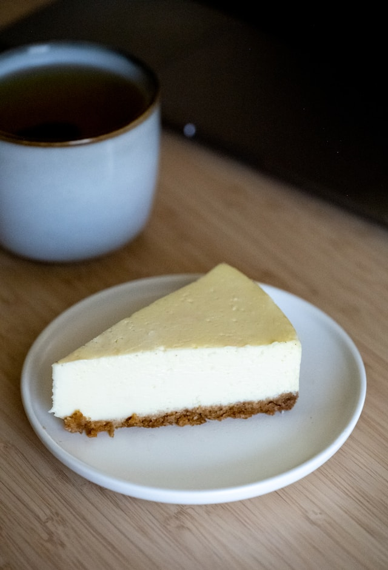

Oreo Cheesecake

Description
This is a easy and no-bake recipe for a cheesecake made with cookies and graham crackers as the base and a simple creamy filling.
Ingredients
- 3⁄4 cup of finely ground graham cracker crumbs
- 3⁄4 cup of pecan sandies cookies
- 3 tablespoons butter
- 3 tablespoons white sugar
- 8 ounces cream cheese
- 2 tablespoons lemon juice
- 1⁄2 cup of heavy whipping cream, whipped
- 1⁄2 cup of sliced fresh strawberries (optional)
Steps
- Gather all ingredients.
- Mix crushed cookies, graham crackers, melted butter, and 3 tablespoons sugar together in a medium bowl.
- Press into a 7-inch springform pan. Place in the refrigerator until ready to use.
- Beat cream cheese, 1/3 cup of sugar, and lemon juice together in a large bowl.
- Whip cream, and fold into cream cheese mixture.
- Spread into pan.
- Top with sliced strawberries (if using). Freeze for 1 hour, covered with foil.
- Place in refrigerator 30 minutes before serving.